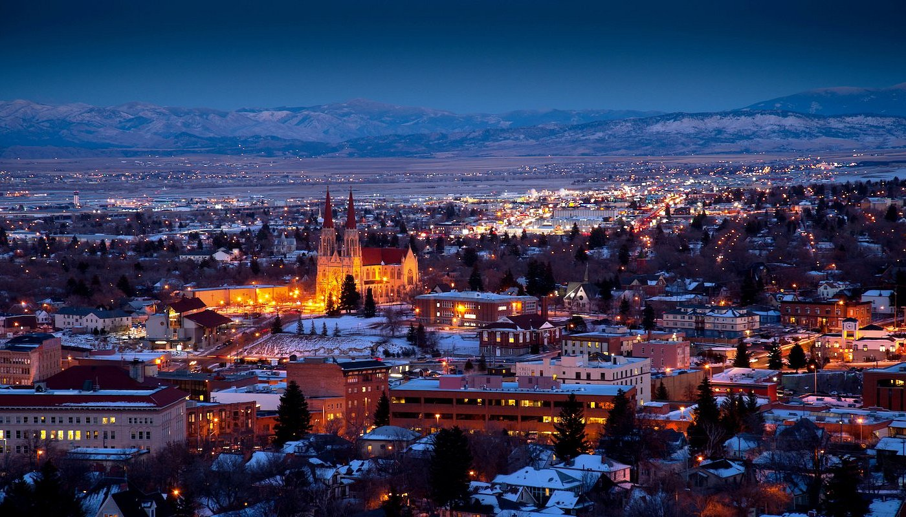

Welcome to Helena - Montana's Capital City
Helena is Montana's capitol and the state's third territorial capital. It is nicknamed the "Queen City of the Rockies". Founded in 1864 as the result of a gold strike. Helena was founded by the "Four Georgians", (John Cowan, Daniel Jackson Miller, John Crab, and Reginald - or Robert - Stanley) who stumbled upon gold in what is known as "Last Chance Gulch". Helena has a rich history and if you are interested in learning more about Helena, please check out one of my favorite resources, Helena as she Was.
